Бородинский хутор
Уютный отдых среди лошадей и природы
Более 35 лошадей, домики, баня и другие животные — 110 км от Москвы
от Москвы
Этот мир выглядит иначе, если смотреть на него из седла
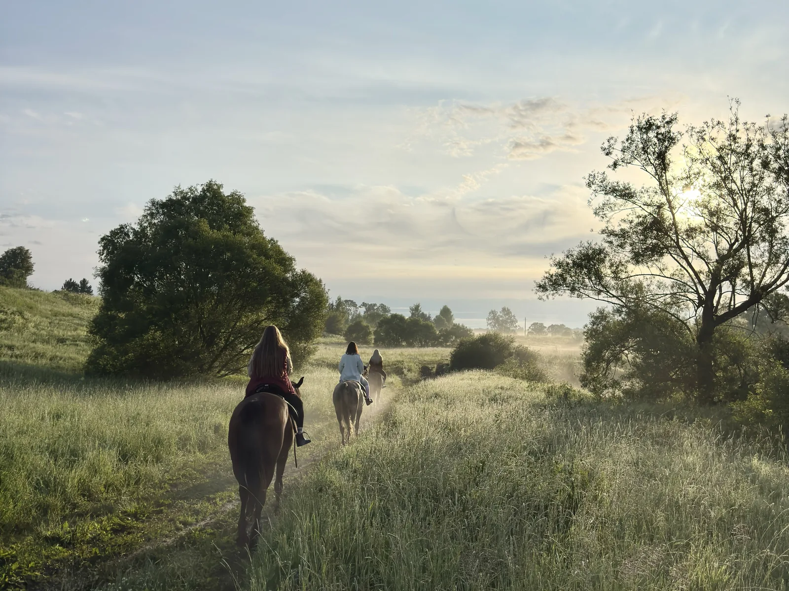
Наши обычные прогулки верхом длятся 2 часа, маршруты проходят через поля и леса в окрестностях Бородинского хутора.
Во время прогулок в поводу никого не водим.
Подробнее и записатьсяГруппы по уровню
Уровень выбирать не нужно — на месте инструктор подберёт лошадь и группу.
Начинающие
Для тех, кто впервые садится в седло или уже ездил несколько раз. Перед прогулкой проводим инструктаж; каждый самостоятельно управляет лошадью, инструктор сопровождает верхом и уже в полях помогает освоить рысь.
Уверенная рысь
Для всадников с небольшим опытом, которые знают основы и уверенно ездят рысью. В маршруте преобладает езда рысью.
Опытные всадники
Для тех, кто давно занимается верховой ездой, уверенно ездит рысью и галопом, в том числе по пересечённой местности.
Что может быть лучше, чем домик в деревне?
Классические русские бревенчатые домики с камином, всеми удобствами и полным уединением с природой. Разные домики, рассчитанные как на уютное пребывание с самым близким человеком, так на большую компанию. У каждого домика своя мангальная зона.
И берите с собой морковку, ведь с утра прямо на крыльцо придут знакомиться наши кролики
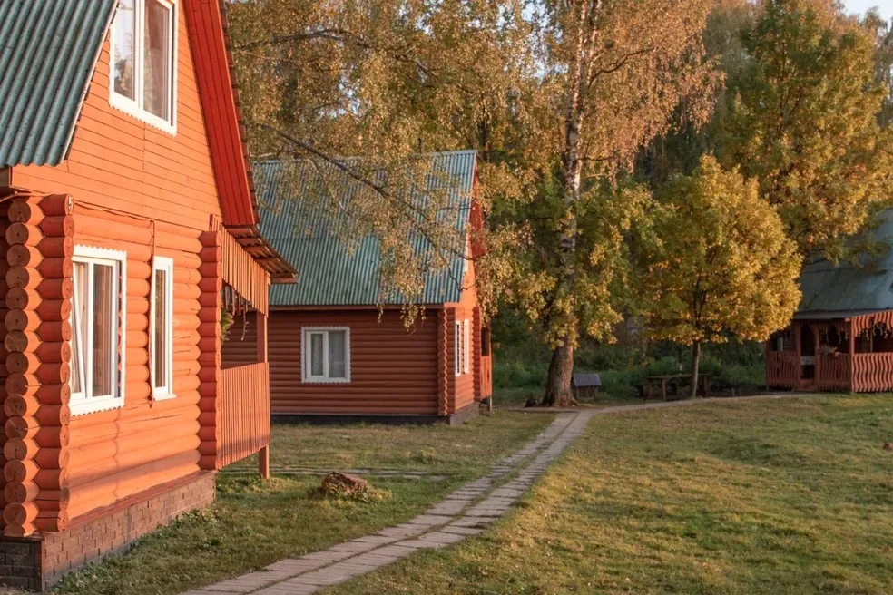
Двухместный домик
2 гостя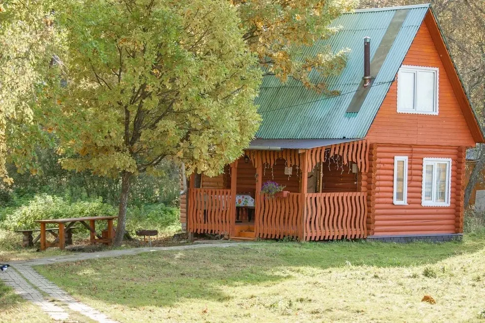
Домик на 6 человек
до 6 гостейНа 10 человек
до 10 гостейНа 12–15 человек
до 15 гостейБаня
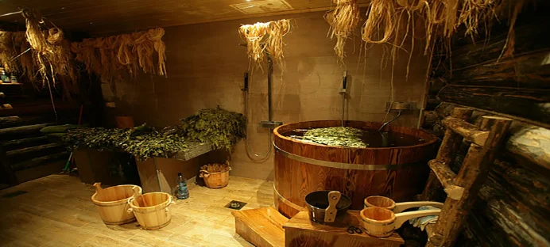
2–3 строки: чем хороша баня на хуторе, что внутри, чем запомнится.
Цены
Прогулка оплачивается на сайте полностью. Домик — предоплата в размере стоимости первых суток, остаток на месте.
Ближайшие смены
Добро пожаловать в Бородинский хутор!
Мы не просто конно-туристическая база, мы целый эко-мир, олицетворение любви людей и животных.
Животный мир, свежий воздух, лошади проносящиеся мимо вас, это то что дает внутреннюю гармонию и истинное ощущение свободы.

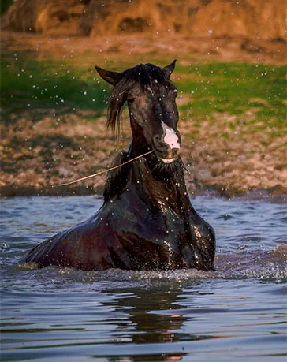
Важная информация
Новости хутора
Все новости →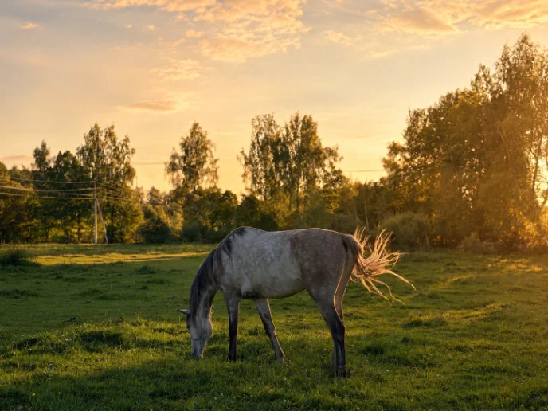
Пробуем выезды в 7:00 — туман над полем и пустые дороги. Пока по средам и пятницам, записывайтесь заранее.
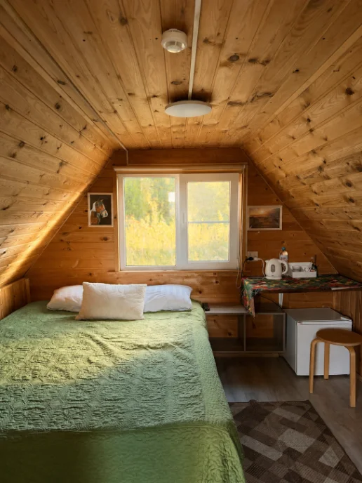
Две спальни, веранда с видом на выпас и своя купель. Уже открыт для бронирования.
Адрес и контакты
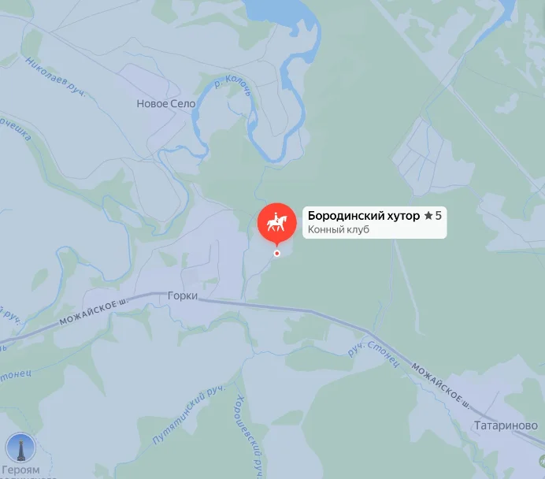
Бородинский хутор
Уютный отдых среди лошадей и природы
Более 35 лошадей, домики, баня и другие животные — 110 км от Москвы

Этот мир выглядит иначе, если смотреть на него из седла
Наши обычные прогулки верхом длятся 2 часа, маршруты проходят через поля и леса в окрестностях Бородинского хутора.
Во время прогулок в поводу никого не водим.
Подробнее и записатьсяГруппы по уровню
Уровень выбирать не нужно — на месте инструктор подберёт лошадь и группу.
Начинающие
Для тех, кто впервые садится в седло или уже ездил несколько раз. Перед прогулкой проводим инструктаж; каждый самостоятельно управляет лошадью, инструктор сопровождает верхом и уже в полях помогает освоить рысь.
Уверенная рысь
Для всадников с небольшим опытом, которые знают основы и уверенно ездят рысью. В маршруте преобладает езда рысью.
Опытные всадники
Для тех, кто давно занимается верховой ездой, уверенно ездит рысью и галопом, в том числе по пересечённой местности.
Что может быть лучше, чем домик в деревне?
Классические русские бревенчатые домики с камином, всеми удобствами и полным уединением с природой. У каждого домика своя мангальная зона. И берите с собой морковку, ведь с утра прямо на крыльцо придут знакомиться наши кролики
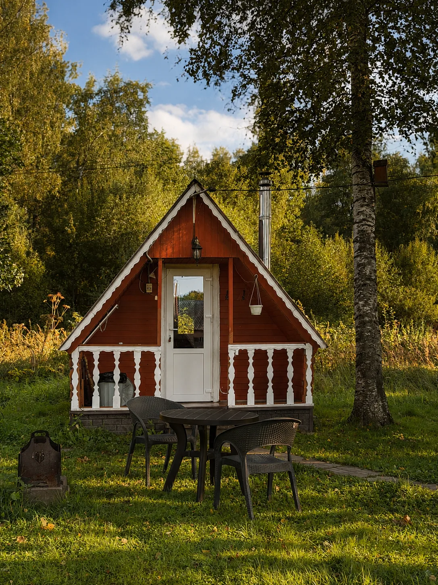
Двухместный
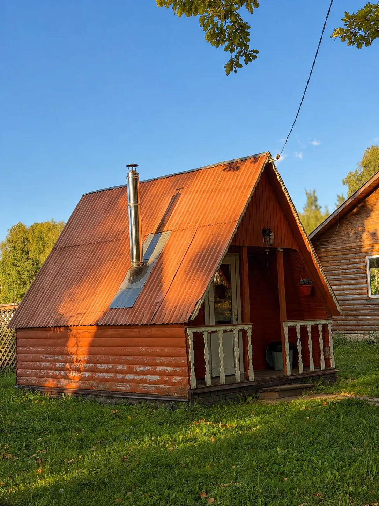
На 6 человек
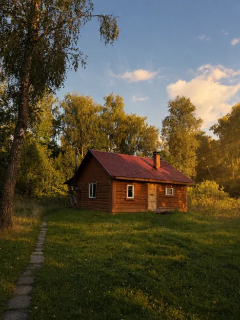
На 10 человек
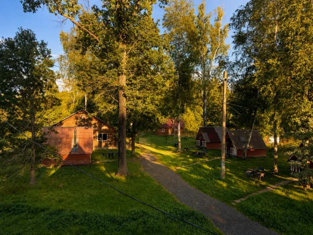
На 12–15 человек
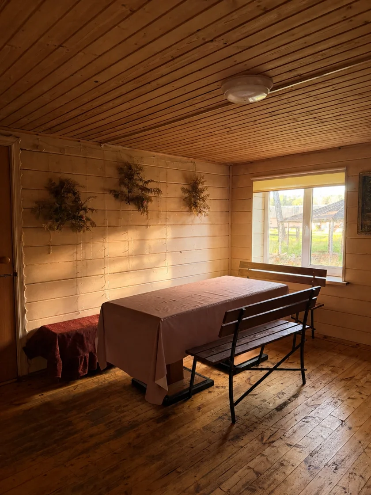
Баня
2–3 строки: чем хороша баня на хуторе, что внутри, чем запомнится.
Цены
Прогулка оплачивается на сайте полностью, место держим 15 минут до оплаты. Домик — предоплата в размере стоимости первых суток, остаток на месте.
Ближайшие смены
Все смены и календарь →Добро пожаловать в Бородинский хутор!
Мы не просто конно-туристическая база, мы целый эко-мир, олицетворение любви людей и животных.
Животный мир, свежий воздух, лошади проносящиеся мимо вас, это то что дает внутреннюю гармонию и истинное ощущение свободы.
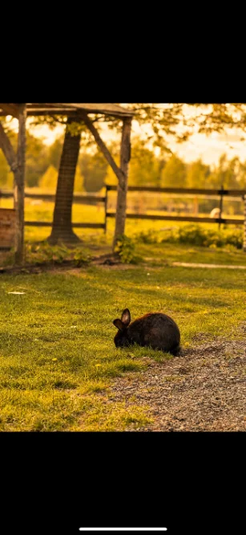
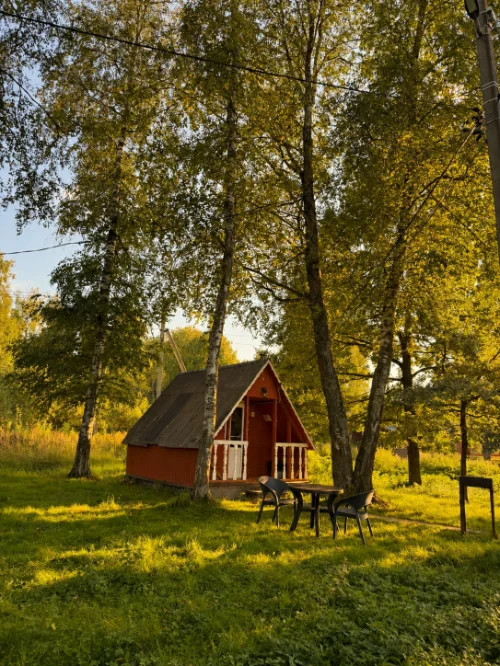
Важная информация
Новости хутора
Все новости →Пробуем выезды в 7:00 — туман над полем и пустые дороги. Пока по средам и пятницам, записывайтесь заранее.
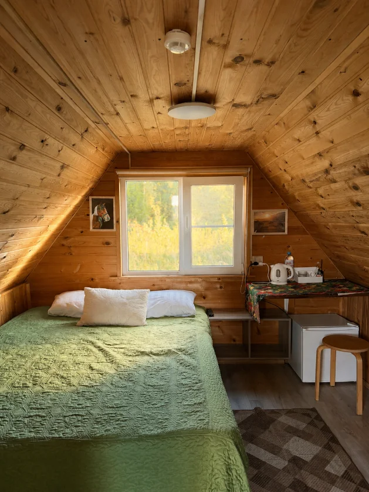
Две спальни, веранда с видом на выпас и своя купель. Уже открыт для бронирования.
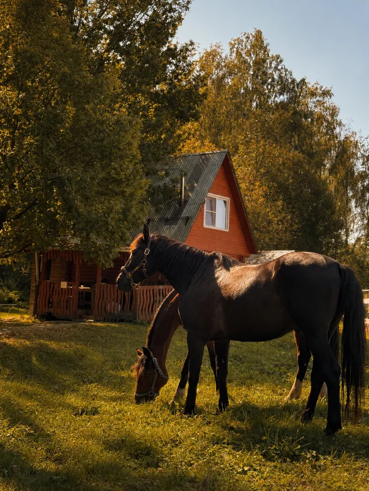
Знакомиться можно, угощать — только вместе с инструктором. Фото — в альбоме этого лета.
Адрес и контакты
Бородинский хутор
110 км от Москвы